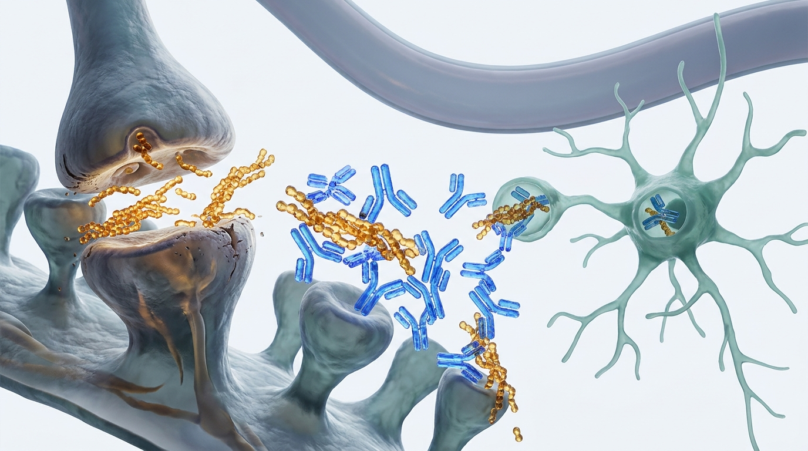

LEQEMBI 臨床實務手冊：
最新實證與真實世界照護經驗
LEQEMBI in Clinical Practice:
Current Evidence & Real-World Experience
抗類澱粉單株抗體之精準篩選、ARIA 影像監測、皮下劑型與 2026 門診實務常規 Precision Patient Selection, ARIA Surveillance, Subcutaneous Dosing & 2026 Protocols
陳培豪 醫師 Pei-Hao Chen, MD
馬偕紀念醫院 失智防治中心｜神經科主治醫師 Dementia Prevention & Treatment Center, MacKay Memorial Hospital
2026-10 專科醫師臨床研討會 Clinical Symposium 2026
各位同仁與先進早安。今天我們以「LEQEMBI 在臨床實務中的最新實證與真實世界照護經驗」為題，共同回顧抗類澱粉抗體從第 3 期樞紐試驗，走向全球超過一萬五千例真實世界門診的關鍵經驗。
2026 阿茲海默症免疫治療：臨床醫師的核心三問 Alzheimer's Immunotherapy 2026: Three Critical Clinical Dilemmas
從隨機對照試驗 (RCT)、長期延伸世代 (OLE) 到門診跨科落地照護實務 Bridging Pivotal Trials, Long-Term Extensions (OLE), and Outpatient Care Logistics
精準篩選與適應症 Precision Patient Selection
MCI 與輕度失智的黃金治療時間窗。APOE 基因檢測如何影響治療決策與知情同意？ MCI vs Mild Dementia therapeutic window. How does APOE genotyping guide informed consent?
ARIA 防線與影像時程 ARIA Surveillance & Management
2026 年最新 FDA 修正之 1, 2, 3, 6 個月 MRI 監測指引。無症狀與症狀性水腫如何安全處置？ Revised 2026 FDA MRI protocol at 1, 2, 3, 6 months. Managing asymptomatic vs symptomatic ARIA.
維持期與皮下注射 (SC) Maintenance Dosing & Subcutaneous
18 個月斑塊清除後的決策：持續靜脈維持、降頻、抑或 2026 最新批准之居家每週 SC 劑型？ Post-clearance choices at 18 months: IV q4w maintenance vs 2026 FDA-approved weekly SC autoinjector.
樞紐 Phase 3、4年 OLE 軌跡、p-tau217 串聯動態與方法學檢驗Pivotal Phase 3, 4-Yr OLE, p-tau217 dynamics & methodology
ALZ-NET (2,728例)、日本 PMS、中國多中心與選病過濾效應ALZ-NET (2,728 pts), Japan PMS, China RWE & selection filters
APOE 分層、1/2/3/6月 MRI SOP、臨床分級處置與抗凝血禁忌APOE risk, 1/2/3/6 mo MRI SOP, grading & anticoagulation
導航護理師、2026 FDA 皮下劑型 (SC)、停藥決策與台灣現況Nurse navigation, 2026 FDA SC autoinjector & Taiwan access
架構參考：Cummings J, et al. Alzheimers Dement 2023; FDA DailyMed Revised 07/2026. Framework: Cummings J, et al. Alzheimers Dement 2023; FDA DailyMed Revised 07/2026.
在開始檢視繁複的數據前，臨床醫師每天在診間面對的，本質上就是三個核心問題。
第一問是「何時啟動」：哪一群病人真正能在黃金窗口獲益？基因檢測與生物標記該如何搭配？
第二問是「如何安全監測」：如何在門診建立零死亡、低重症的 ARIA 防護網？
第三問則是「治療多久與如何維持」：18 個月清除斑塊後，如何轉入維持期與最新的皮下注射劑型？
下半部是今天 40 分鐘的四大核心模組，我們將依序深入解析。
作用機轉：專一性結合具突觸毒性之可溶性原纖維 Mechanism of Action: High Selectivity for Toxic Soluble Protofibrils
構形專一性抗體：為何對 Protofibrils 的高度選擇性造就療效與安全性平衡 Conformational Selectivity: Why targeting 75–300 kDa protofibrils optimizes safety and efficacy
生理性可溶單體Physiological Monomer
結合力極低。不結合生理性單體，完整保留正常中樞神經生理傳導與受體代謝。Negligible binding. Spares normal synaptic transmission and metabolic homeostasis.
Protofibrils (75–300 kDa)Protofibrils (75–300 kDa)
高達千倍親和力。精準中和破壞突觸長效增益 (LTP)、引發神經發炎與軸突退化之毒性核心。>1,000-fold selectivity. Neutralizes the primary driver of LTP disruption and neurotoxicity.
成熟原纖維斑塊Mature Fibrillar Plaque
經由 Fc 受體誘導小膠細胞吞噬清除已沉積斑塊，同時大幅減少腦血管壁急性撕裂。Triggers Fc-mediated microglial phagocytosis while minimizing acute cerebrovascular tears.

| 單株抗體Antibody | 主要結合標靶Main Target | 試驗 ARIA-ETrial ARIA-E |
|---|---|---|
| Lecanemab | 可溶性原纖維 (Protofibril)Soluble Protofibrils | 12.6% |
| Donanemab | N3pG 斑塊 (Dense Plaque)N3pG Core Plaque | 24.0% |
| Aducanumab | 原纖維聚集體 (Fibrils)Insoluble Fibrils | 35.2% |
出處：van Dyck CH, et al. N Engl J Med 2023; Söderberg L, et al. Alzheimers Res Ther 2023. PMID 36449413. Source: van Dyck CH, et al. N Engl J Med 2023; Söderberg L, et al. Alzheimers Res Ther 2023. PMID 36449413.
首先看分子機轉。類澱粉蛋白在中樞神經系統中具有動態構形轉換。
最左側的單體是正常生理代謝產物，Lecanemab 對其親和力極低，因此能完整保留正常生理傳導功能。
中間的可溶性原纖維，是目前公認毒性最強、直接破壞突觸可塑性的致病關鍵，也是 Lecanemab 主要的親和標靶。
右側的不溶性斑塊，Lecanemab 則能透過 Fc 段活化小膠細胞吞噬清除。
右側機轉圖與表格進一步展示了構形專一性的優勢：相較於鎖定成熟斑塊的抗體，原纖維專一性展現了更低的血管水腫發生率。
Clarity AD 樞紐第 3 期：18 個月核心療效與生物標記 Clarity AD Pivotal Phase 3: 18-Month Clinical & Biomarker Endpoints
n=1,795 全球多中心隨機對照試驗，主要終點與所有次要終點均達到高度統計顯著 n=1,795, Global multi-center double-blind RCT; highly significant primary and secondary endpoints
Δ-0.45 (95% CI -0.67 to -0.23, p<0.001)；第 6 個月起即出現顯著分離。 Δ-0.45 (95% CI -0.67 to -0.23, p<0.001); early divergence by month 6.
Δ-1.44 (p<0.001)；日常生活自理功能 (ADCS-ADL) 亦顯著減緩 37%。 Δ-1.44 (p<0.001); ADCS-MCI-ADL daily function decline slowed by 37%.
基線 77.9 CL 降至 18.8 CL；超過 68% 患者達到類澱粉視覺轉陰標準 (<24 CL)。 Baseline 77.9 to 18.8 CL; >68% achieved amyloid PET visual negativity (<24 CL).
有症狀 ARIA-E 僅 2.8%；多數為輕度、局灶性，78% 於 12 週內完全消退。 Symptomatic ARIA-E was 2.8%; mostly mild/focal; 78% resolved within 12 weeks.
超過 68% 患者達到類澱粉視覺轉陰標準（<24 Centiloids）；低病理組清除更快。 >68% achieved visual PET clearance (<24 CL); faster reduction in early-stage pathology.
出處：van Dyck CH, et al. N Engl J Med 2023;388(1):9-21. PMID 36449413. Source: van Dyck CH, et al. N Engl J Med 2023;388(1):9-21. PMID 36449413.
進入 Clarity AD 試驗的核心數據。1,795 名早期阿茲海默症受試者中，展現了四項決定性數字。
首先是主要終點 CDR-SB，18 個月退化減緩 27%，在統計學上高度顯著。
認知量表 ADAS-Cog 減緩 26%，而日常生活自理功能 ADCS-ADL 更大幅減緩了 37%。
在生物標記上，類澱粉沉積平均清除近 60 個 Centiloid，超過三分之二的患者達到視覺轉陰標準。
而在安全性方面，ARIA 水腫發生率為 12.6%，有臨床症狀者僅 2.8%，絕大多數在數月內消退。
下方的次族群分析清楚指出：疾病越早期、Tau 病理負荷越低者，臨床獲益越為顯著。
次群組分層：早期介入與低 Tau 負荷之獲益最大化 Subgroup Stratification: Maximizing Efficacy in Early Stage & Low Tau
Tau PET 次研究與病程分期分析：揭示「疾病修飾治療窗口 (Therapeutic Window)」 Tau PET Substudy & Staging Analysis: Uncovering the Disease-Modifying Therapeutic Window
低 Tau 病理負荷 (SUVR <1.06) Low Tau Pathology (SUVR <1.06)
基線未出現廣泛新皮質 Tau 糾結蔓延者：18 個月時高達 60% 臨床評分改善或維持無退步（vs 安慰劑 28%）。 Patients without neocortical tau tangles: 60% showed improvement or no decline at 18 months (vs 28% placebo).
早期 MCI 認知減緩幅度顯著更佳 Early MCI Drives Superior Cognitive Slowing
💡 專科實務結論：早期生物標記篩檢（血液 p-tau217 ＋ 認知篩檢）是實現「黃金治療窗口」的決定性前提。 💡 Practice Takeaway: Early biomarker screening (blood p-tau217 + cognitive screen) is essential to capture this therapeutic window.
出處：van Dyck CH, et al. Alzheimers Dement 2025; PMID 41355080; Honig LS, et al. AAIC 2024. Source: van Dyck CH, et al. Alzheimers Dement 2025; PMID 41355080; Honig LS, et al. AAIC 2024.
第 5 頁探討臨床次群組分層，特別是 Tau PET 與臨床分期。
在低 Tau 病理負荷組中，高達 60% 的患者在 18 個月時認知評分維持穩定甚至改善，對照組僅 28%。
而在臨床分期上，MCI 階段受試者的認知減緩達 31%，日常生活自理能力減緩達 44%，明顯優於已進入輕度失智的族群。
這清楚告訴我們：抗類澱粉抗體是一項「與時間賽跑」的早期介入療法。
Clarity AD 4 年開放延伸：病程修飾長期軌跡 Clarity AD 4-Year OLE: Long-Term Disease-Modifying Trajectories
478 名患者持續治療滿 4 年；與 ADNI 外部自然對照相比展現持續擴大的認知差距 478 patients treated for 4 years; expanding cognitive gap compared with ADNI natural history
vs ADNI 預期軌跡：3 年差 -1.01，4 年差 -1.75；vs BioFINDER 4 年差 -2.17。 vs ADNI natural cohort: -1.01 at 3 yr, -1.75 at 4 yr; -2.17 vs BioFINDER.
4 年累積惡化至下一失智分期的風險降低 34% (3 年降低 30%)。 Hazard of progression to subsequent dementia stage reduced by 34% at 4 years.
換算維持在早期 MCI 或輕度狀態的獨立自理時間，平均增加 10.7 個月。 Patients preserved independence in early-stage disease for an additional 10.7 months.
🔍 OLE 延伸期關鍵現象：早期 vs 延遲起始 (Early vs Delayed Start) 🔍 OLE Key Phenomenon: Non-Catch-Up in Delayed-Start Group
雙盲期接受安慰劑、於 18 個月後才轉入 Lecanemab 的「延遲起始組」，其退化曲線平行於早期起始組，但未能追回前 18 個月所損失的神經認知差距。此現象強烈支持病程修飾 (Disease Modification) 特性。 Patients who switched from placebo to active drug at month 18 showed parallel slowing but never caught up to the early-start cohort, confirming disease-modifying trajectory preservation.
出處：Eisai/Biogen AAIC 2025 新聞發布; van Dyck CH, et al. Alzheimers Dement 2025 (PMID 41355080). Source: Eisai/Biogen AAIC 2025 Release; van Dyck CH, et al. Alzheimers Dement 2025 (PMID 41355080).
第 6 頁檢視 4 年開放延伸期的長期數據。
478 名完成 4 年治療的患者中，與 ADNI 外部對照相比，CDR-SB 差距從 18 個月的 0.45 分，擴大至 4 年的 1.75 分。
病程惡化到下一個臨床分期的風險，累積降低了 34%。
換算成生活自理時間，為病患多爭取了 10.7 個月的健康時間。
最關鍵的是：延遲 18 個月才用藥的安慰劑轉換組，始終無法追上早期起始組，證實了不可逆的神經突觸損傷無法事後彌補。
方法學省思：外部對照的侷限、流失率與學術批評 Methodological Scrutiny: Dropouts, External Controls & Academic Critiques
客觀檢驗科學實證：健康受試者留存偏誤 (Healthy Survivor Bias) 與 Cochrane 系統性綜述 Objective Evaluation: Healthy survivor bias, high attrition rates, and Cochrane reviews
OLE 延伸期年化退化速率加速現象 Accelerated Annual Decline in OLE
BMJ Neurol Open 2026 研究指出：早期起始組在 OLE 期的年化 CDR-SB 退化（Δ0.53/年），其實高於雙盲期，退化速率接近雙盲期安慰劑。 Dwivedi et al. noted that annual CDR-SB decline in OLE (Δ0.53/yr) was faster than double-blind, approaching double-blind placebo.
標準化平均差 (SMD -0.12) 與臨床意義 SMD -0.12 & Clinical Meaningfulness
Cochrane 納入 17 項抗類澱粉抗體 RCT（n=20,342）：18 個月 CDR-SB 之 SMD 為 -0.12，達到統計顯著但臨床意義 (MCID) 仍有專業辯駁。 Cochrane pooled 17 anti-amyloid RCTs (n=20,342): CDR-SB SMD was -0.12; statistically significant but debated against MCID.
⚖️ 專科醫師平衡思維：向病患溝通時，應理性說明「減緩退化 27%」之實證，避免過度承諾「完全逆轉病程」。 ⚖️ Balanced Counseling: Convey the real 27% slowing benefit objectively without overpromising disease reversal.
出處：Dwivedi AK, et al. BMJ Neurol Open 2026 (PMID 42602524); Nonino F, et al. Cochrane Rev 2026 (PMID 41985900). Source: Dwivedi AK, et al. BMJ Neurol Open 2026 (PMID 42602524); Nonino F, et al. Cochrane Rev 2026 (PMID 41985900).
作為嚴謹的神經專科醫師，我們必須同時檢視學界的反方聲音與方法學限制。
2026 年 BMJ Neurol Open 與 Cochrane 系統性綜述提出警示：4 年 OLE 的流失率達 44%，外部對照組流失更高達 78%，存在健康的受試者留存偏誤。
此外，Cochrane 計算的標準化平均差為 -0.12，指出雖然統計學高度顯著，但在個體感受上並非返老還童。
因此在向病患說明時，實事求是、明確界定 27% 減緩的真實意義，是建立良好醫病信賴的核心。
下游標記串聯動態：p-tau217、GFAP 與 NfL 演變 Downstream Biomarker Cascade: Dynamics of p-tau217, GFAP, and NfL
類澱粉清除如何驅動下游 Tau 過度磷酸化降溫與神經膠細胞發炎消退 How amyloid removal drives reduction in tau phosphorylation and neuroinflammation
血漿 p-tau217 顯著回降 Plasma p-tau217 Reduction
治療 18 個月內血漿 p-tau217 下降達 -50% 至 -60%，朝向健康對照組水準正常化。 Plasma p-tau217 decreases by -50% to -60% over 18 months, normalizing toward healthy baseline.
GFAP 神經發炎指標下降 GFAP Neuroinflammation
血漿 GFAP 顯著下降 -30%，反映星狀膠細胞反應性發炎顯著降溫，減輕突觸周邊微環境毒性。 Plasma GFAP drops by -30%, demonstrating reduced astrocytic activation and neuroinflammation.
NfL 神經絲輕鏈延遲響應 NfL Delayed Dynamics
18 個月內血漿 NfL 變化不顯著；反映神經軸突已發生的物理性變性具有顯著滯後性 (Lag Phase)。 Plasma NfL showed no significant early drop; axonal degeneration exhibits a pronounced lag phase.
生物標記串聯時序：類澱粉斑塊清除 (0–6個月) ➔ 星狀膠細胞發炎降溫 (GFAP) 與 Tau 磷酸化回降 (p-tau217, 6–18個月) ➔ 認知功能退化減緩 (12–18個月)。 Biomarker Cascade Sequence: Amyloid removal (0–6 mo) ➔ Astrocytic cooling (GFAP) & Tau reduction (p-tau217, 6–18 mo) ➔ Cognitive slowing (12–18 mo).
出處：Lu M, et al. JAMA Neurol 2025 (PMID 41082199); Mu R, et al. Lancet Neurol 2026 (PMID 42785333). Source: Lu M, et al. JAMA Neurol 2025 (PMID 41082199); Mu R, et al. Lancet Neurol 2026 (PMID 42785333).
在第 8 頁，我們探討下游生物標記的串聯動態。
隨著類澱粉斑塊清除，血漿 p-tau217 顯著回降達 50% 以上，證明上游斑塊的清除確實阻斷了 Tau 蛋白的惡性磷酸化。
神經發炎標記 GFAP 亦同步下降 30%，顯示星狀膠細胞的過度活化得到緩解。
而軸突損傷標記 NfL 在短期內變化不大，這說明已經發生軸突損傷的神經元需要更長時間修復，體現了生物標記反應的時間差。
斑塊清除深度與認知減緩：高達 R²=0.87 的線性關聯 Plaque Clearance & Clinical Slowing: Robust Correlation (R² = 0.87)
JAMA Neurol 2025 統合分析：達到類澱粉視覺轉陰臨界值 (<20–25 CL) 的決定性意涵 JAMA Neurol 2025 meta-analysis: The clinical necessity of achieving visual PET clearance (<24 CL)
Amyloid 下降量 ↔ CDR-SB 減緩 Amyloid Reduction vs CDR-SB Slowing
JAMA Neurol 2025 樞紐次分析（抗類澱粉抗體類別驗證）證實：類澱粉斑塊清除越多，CDR-SB 進展越慢 (R²=0.87)，血漿 p-tau217 下降越深 (R²=0.86)。清除深度是決定療效的關鍵驅動因子。 JAMA Neurol 2025 (class-wide post-hoc): Greater plaque reduction directly correlates with slower CDR-SB progression (R²=0.87) and deeper p-tau217 drops (R²=0.86).
Centiloid <20–25 CL：視覺轉陰門檻 Centiloids <20–25 CL: Visual Clearance
臨床方針：治療目標不是「永遠高速清除」，而是「徹底達標轉陰（<24 CL），隨後轉入低負擔維持以抑制再沉積」。 Practice Strategy: The clinical objective is to achieve true clearance (<24 CL), then shift to low-burden maintenance to prevent re-deposition.
出處：Lu M, et al. JAMA Neurol 2025 (PMID 41082199) [Donanemab 次分析／類別驗證]; Zimmer JA, et al. JPAD 2026 (PMID 41330788). Source: Lu M, et al. JAMA Neurol 2025 (PMID 41082199) [Donanemab post-hoc class validation]; Zimmer JA, et al. JPAD 2026 (PMID 41330788).
第 9 頁展示了斑塊清除深度與認知減緩的劑量反應關係。
JAMA Neurol 2025 年發表的研究清楚指出：Centiloid 下降越多，CDR-SB 減緩的決定係數高達 0.87，證明清除斑塊並非旁門左道，而是實質臨床效益的核心動力。
一旦清除到 24 Centiloid 以下，腦內類澱粉即實質轉陰；後續每年再累積速率僅約 2.4 Centiloid，這為後續降頻維持提供了堅實支撐。
第一章核心總結：樞紐實證奠定的 3 大臨床鐵律 Chapter 1 Takeaways: Three Clinical Pillars Established by Core Evidence
從分子專一性、核心樞紐終點到長期病程修飾的完整邏輯閉環 From molecular selectivity to pivotal endpoints and long-term disease modification
鎖定原纖維優化安全窗 Target Protofibrils
專一結合具突觸毒性之可溶性原纖維 (Kd ~1 nM)，在確保近 60 Centiloid 清除力的同時，維持 12.6% 之可控 ARIA 水腫率。 Selective targeting of protofibrils achieves robust plaque clearance with a manageable 12.6% trial ARIA-E rate.
早篩早治效益最大化 Treat Early (MCI / Low Tau)
MCI 早期與低 Tau 負荷患者（60% 臨床穩定改善）獲益遠優於輕度失智；延遲治療所造成的突觸損失無法事後追回。 Patients with MCI and low tau derive far greater benefit (60% stable); irreversible neuronal loss cannot be recovered.
清除達標後轉入維持 Clearance & Maintenance
以 <24 Centiloid 轉陰為目標；清除後再累積緩慢 (2.4 CL/年)，為 18 個月後轉入低負擔維持期提供了科學基石。 Target amyloid clearance (<24 CL); low re-accumulation (2.4 CL/yr) supports transition to maintenance therapy.
總結第一章的三大臨床鐵律。
第一，構形專一性鎖定原纖維，為臨床提供兼顧清除力與安全性的分子基礎。
第二，早期 MCI 與低 Tau 負荷病患獲益最為顯著，延遲治療無法追回失去的認知功能。
第三，以清除斑塊至 24 Centiloid 以下為目標，達標後再累積速率緩慢，為長期維持期奠定了基礎。
接下來，我們將進入第二章，檢視全球超過一萬五千名真實世界病患的臨床實務數據。
全球真實世界 RWE 全景地圖：超過 15,000 例患者的跨國經驗 Global Real-World Landscape: Multi-National Registries (>15,000 Patients)
涵蓋美、日、中、韓與歐洲各大國家型登錄系統與醫學中心世代 Covering US, Japan, China, Korea, and European National Registries & Academic Cohorts
ALZ-NET
n = 2,728 接受治療患者；127 個醫療中心；全美最具代表性之阿茲海默免疫療法真實世界資料庫。 n = 2,728 treated patients across 127 sites; leading US nationwide registry.
All-Case PMS
n = 2,672 全國登錄；中位年齡 76 歲；嚴格法規追蹤下亞洲族群最大型安全性前瞻資料。 n = 2,672 nationwide; median age 76; largest prospective Asian safety surveillance.
29 Centers / Huanhu
n = 1,141 復旦多中心世代與 1,042 例 天津環湖醫院長期追蹤；亞洲臨床認知反應與自費留存經驗。 n = 1,141 Fudan registry & 1,042 pts Huanhu cohort; Asian real-world outcomes.
PurpleLab Claims
n = 10,763 真實保險申報追蹤；客觀評估 18 至 24 個月真實臨床持續用藥與中途退出比例。 n = 10,763 commercial claims; objective Kaplan-Meier analysis of 2-year persistence.
儘管跨國醫療體系與健保給付條件不同，全球數據一致證實：臨床分期穩定率達 83%–88%，且 ARIA 發生率普遍低於第 3 期試驗。 Across diverse healthcare systems, global data confirms: clinical stability reaches 83%–88% with ARIA consistently lower than pivotal trials.
來源：ALZ-NET (AAIC 2026); Iwata A 2026 (PMID 41849958); Wu H 2026 (PMID 42557932); Eisai News 2026-03-23. Sources: ALZ-NET (AAIC 2026); Iwata A 2026 (PMID 41849958); Wu H 2026 (PMID 42557932); Eisai News 2026-03-23.
進入第二章，我們綜覽全球超過一萬五千例真實世界患者的全景地圖。
全美最具代表性的 ALZ-NET 登錄了超過兩千七百名接受治療的病患。
日本全例監測系統追蹤了兩千六百多例，提供了東亞高齡族群最嚴謹的安全性數據。
中國復旦與天津環湖醫院合計收案超過兩千例，代表自費市場下的真實留存樣態。
而美國保險申報數據超過萬例，為我們提供了無偏見的長期用藥持續率。
各大世代的共通結論是：真實世界分期穩定率穩定落在八成以上。
美國 ALZ-NET 國家登錄：2,728 例門診患者實務成果 US ALZ-NET Registry: Real-World Experience in 2,728 Treated Patients
涵蓋全美 127 個專業中心，真實反映門診用藥人口學、分期穩定率與處置現況 127 active sites nationwide: Demographics, retention, and clinical stage stability
門診患者特徵與分層 Cohort Characteristics
18 個月追蹤高達 84% 穩定未惡化 84% Maintained Stage Stability at 18 Months
ARIA 處置實況：ALZ-NET 記錄之 ARIA-E 發生率僅 6.0%（有症狀 1.5%）。發生後之處置分佈：約 1/3 繼續治療、1/3 暫停待消退後重啟、僅 1/4 永久停藥。 ARIA Clinical Handling: ARIA-E was 6.0% (symptomatic 1.5%). Management: ~1/3 continued, ~1/3 temporarily paused, and only 1/4 permanently discontinued.
出處：ALZ-NET 登錄資料更新，AAIC 2026 會議發表（未經同儕審查）；Alzforum 2026-07-31 報導。 Source: ALZ-NET Registry Update, AAIC 2026 Abstract (Non-peer reviewed); Alzforum 2026-07-31.
第 12 頁來看美國 ALZ-NET 國家登錄系統的具體數據。
門診接受治療的患者平均 75 歲，七成以上在極早期 MCI 階段；APOE 篩檢率達 92%，而同型合子僅佔 9%，顯示臨床醫師普遍採取審慎篩選。
在療效追蹤上，6 個月、12 個月與 18 個月的臨床分期穩定率分別高達 94%、87% 與 84%，大幅優於自然病程對照。
更值得注意的是：真實世界中發生 ARIA 的患者，超過七成經暫停或評估後成功重啟，僅四分之一需永久停藥。
LEADER 世代研究：美國 12 醫學中心 2 年前瞻追蹤 LEADER Cohort Study: 2-Year Multi-Center Prospective Tracking (n=432)
平均追蹤 520 天，83% 患者維持臨床未惡化，高達 87% 持續接受治療 Mean follow-up 520 days: 83% non-progression, 87% treatment retention
75.9% 維持穩定、6.6% 臨床評分改善，僅 17.5% 出現分期惡化。 75.9% stabilized, 6.6% clinically improved, and 17.5% progressed.
432 人中僅 58 人停藥；因 ARIA 停藥者僅 12 人 (2.8%)。 Only 58 discontinued out of 432; only 12 stopped due to ARIA (2.8%).
155 人成功轉為 IV 每 4 週、14 人轉皮下注射 (SC) 維持。 155 switched to IV q4w and 14 to SC; 88% remained compliant.
📌 LEADER 研究對臨床維持期的重大啟示 📌 Crucial Insights from LEADER for Clinical Practice
LEADER 是全球首個證實「完成 18 個月治療後，轉為每 4 週一次維持輸注或每週皮下注射，患者仍能維持極高遵從性與認知穩定」的前瞻世代，為長程照護奠定信心。 LEADER provides first prospective proof that transitioning to monthly IV or weekly SC after 18 months maintains high adherence and stability.
出處：Eisai 新聞發布 2026-07-15；LEADER 世代於 AAIC 2026 會議報告（未經同儕審查）。 Source: Eisai Press Release 2026-07-15; LEADER Cohort, AAIC 2026 Developing Topics (Non-peer reviewed).
第 13 頁介紹美國 12 個頂尖醫學中心聯合進行的 LEADER 世代研究。
追蹤滿 2 年的 203 名患者中，83% 臨床分期未出現退步，其中甚至有 9% 出現評分改善。
全體治療持續率高達 87%，因 ARIA 停藥的比例不到 3%。
更值得關注的是維持期：轉為每 4 週靜脈輸注或皮下注射的病人中，高達 88% 穩定留存，為長期維持策略提供了第一手實證。
日本真實實務：立川世代與全例 PMS 監測成果 Japan Experience: Tachikawa Cohort (n=89) & All-Case PMS (n=2,672)
東亞高齡族群之真實耐受性、超低停藥率與 2026-07 APOE 檢測納保里程碑 East Asian tolerability, low discontinuation, and 2026-07 national insurance coverage of APOE
中位 76 歲高齡族群之優異安全性 Favorable Safety in Median Age 76
臨床退化軌跡完全複製 Clarity AD Cognitive Trajectory Replicates Clarity AD
立川醫院發表之 18 個月數據顯示：門診常規治療下，CDR-SB 惡化速率（+0.79 / +1.10 / +1.60 於 6/12/18 個月）與 Clarity AD 治療組幾乎重合。 18-month data showed CDR-SB decline (+0.79/+1.10/+1.60 at 6/12/18 mo) perfectly tracked the pivotal trial arm.
日本厚勞省於 2026 年 7 月 1 日起，正式將「APOE 基因檢測」納入全民健保給付，標誌著基因風險評估成為常規標準。 Japan MHLW officially covered APOE genotyping under national health insurance on July 1, 2026.
出處：Iwata A, et al. JPAD 2026 (PMID 41849958); Kujuro Y, et al. JPAD 2026 (PMID 42892274). Source: Iwata A, et al. JPAD 2026 (PMID 41849958); Kujuro Y, et al. JPAD 2026 (PMID 42892274).
第 14 頁介紹鄰國日本的最新實務經驗。
日本全國全例 PMS 登錄了超過兩千六百名受試者，中位年齡達 76 歲，但 ARIA 水腫發生率僅 3.0%，第 28 週停藥率低至 7.3%，展現極高的耐受性。
立川醫院的 18 個月追蹤證實，真實門診的認知減緩效果完全複製了第 3 期試驗，且完成 18 個月的患者全員選擇繼續維持。
更具借鏡意義的是：日本厚勞省已在 2026 年 7 月將 APOE 檢測納入公保，為精準風險管理提供了制度保障。
亞洲真實經驗：中國 29 中心與環湖醫院世代 Asian Experience: China 29-Center (n=1,141) & Huanhu Registry (n=1,042)
真實世界臨床穩定率、停藥主因（自費負擔 vs 不良反應）與亞洲族群安全性 Clinical stability, reasons for discontinuation (economic vs AE), and Asian safety profiles
12 個月認知分期維持平穩 Stable Cognitive Staging at 12 Mo
平均年齡 68 歲、基線 MMSE 21 分：CDR 分期穩定或改善於 6 個月達 90%、12 個月達 88%（標準常規治療對照為 75%）。 Mean age 68, MMSE 21: CDR stability was 90% at 6 mo and 88% at 12 mo (vs 75% in standard care).
自費自付環境下的停藥主因剖析 Primary Drivers of Discontinuation
💡 台灣臨床映照：在自費導入階段，醫病溝通必須事先納入「完整 18 個月財務規劃」以確保治療不中斷。 💡 Taiwan Implication: Upfront financial counseling covering full 18-month costs is vital to prevent premature dropouts.
出處：Yu JT 報告，AAIC 2026 會議；Wu H, et al. Alzheimers Dement 2026 (PMID 42557932). Source: Yu JT, AAIC 2026 Report; Wu H, et al. Alzheimers Dement 2026 (PMID 42557932).
第 15 頁探討華人族群與自費市場的真實處境。
復旦大學主持的 29 中心一千多名患者中，12 個月的臨床分期穩定率達 88%，顯著優於傳統標準治療。
而天津環湖醫院一千多例的分析揭示了一個極具臨床意義的現象：在自費環境下，停藥的第一主因是經濟負擔而非藥物副作用，因 ARIA 停藥者不到 2%。
這提醒台灣醫師在診間進行醫病共享決策時，財務規劃與留存評估同樣重要。
真實世界治療留存率：PurpleLab 10,763 例大數據剖析 Real-World Persistence: PurpleLab 10,763 Claims Analysis
Kaplan-Meier 長期留存曲線：18 個月留存 78.4%、24 個月留存 67.3% Kaplan-Meier survival: 78.4% persistence at 18 months, 67.3% at 24 months
KM 治療持續留存曲線 Kaplan-Meier Persistence Curve
為什麼中途停藥？ Why Do Patients Stop?
🚀 2026 解方：FDA 核准之每週皮下注射 (SC) 將徹底釋放 45% 的輸注與交通負擔，顯著拉高真實留存率。 🚀 2026 Solution: At-home weekly subcutaneous injections directly eliminate the 45% logistic burden.
出處：Eisai AD/PD 2026 新聞發布（會議發表，未經同儕審查）；Shields LBE, et al. JPAD 2026 (PMID 41581261). Source: Eisai AD/PD 2026 Release (Conference Abstract, Non-peer reviewed); Shields LBE, et al. JPAD 2026 (PMID 41581261).
第 16 頁我們用全美超過一萬例的商業申報大數據，探討真實留存率與停藥原因。
在長期追蹤中，18 個月留存率為 78.4%，2 年留存率達 67.3%，展現相當穩健的治療耐受度。
分析停藥原因，最大宗（近半數）並不是嚴重副作用，而是每兩週來回醫院輸注的交通與時間負擔；其次才是 ARIA 事件與家屬預期落差。
這正是 2026 年皮下注射劑型獲准居家使用最具顛覆性的臨床價值所在。
核心解密：真實世界 ARIA 發生率為何較試驗「腰斬」？ Key Decryption: Why Real-World ARIA Incidence Halved vs Clinical Trials
從 12.6% 降至 3%–6%：臨床醫師主動採取的「三大選病過濾機制」 Dropping from 12.6% to 3%–6%: The Three Clinical Selection Filters in Outpatient Practice
APOE ε4/4 同型合子分流 ApoE4/4 Homozygote Triage
試驗中同型合子佔 15.4%（其 ARIA-E 率高達 34.5%）；而真實世界 ALZ-NET 僅佔 9.0%、中國佔 8.0%。臨床端主動排除或謹慎分流高風險者。 Homozygotes (ARIA-E 34.5%) made up 15.4% in trials, but only 9.0% in ALZ-NET; high-risk patients are selectively filtered.
抗凝血劑 (DOAC) 嚴格禁忌 Strict Anticoagulant Avoidance
樞紐試驗允許部分抗凝血劑使用；真實世界中醫師高度警戒，ALZ-NET 僅 1.0% 使用抗凝，成功將致死性大腦出血風險降至極低背景值。 Trials permitted limited anticoagulants; real-world clinics strictly avoid them (1.0% in ALZ-NET), preventing ICH.
輸注前血壓與微出血嚴控 Pre-Infusion BP & Microbleed Caps
MGB 實證舒張壓 >75 mmHg 使水腫風險倍增。真實世界診所嚴守「血壓 >140/90 mmHg 暫停輸注」與「微出血 >4 顆嚴格不開立」。 Diastolic BP >75 doubles ARIA risk. Clinics enforce withholding dose if BP >140/90 and cap microbleeds at ≤4.
⚖️ 專科結論：真實世界的低 ARIA 率是「醫師嚴格把關換來的」，切莫因此放鬆影像監測！ ⚖️ Clinical Conclusion: Lower real-world ARIA is earned by strict gatekeeping; vigilance remains mandatory!
真實世界極低的 ARIA 率證實選病準則之有效性；但這並不代表藥物本身毒性減弱，若鬆懈了 MRI 追蹤或貿然納入抗凝血病患，試驗中的嚴重併發症隨時可能重現。 The safety of real-world cohorts proves the AUR criteria work. Relaxing MRI vigilance or admitting anticoagulated patients will recreate trial hazards.
出處：Wu Y, et al. J Neurol 2026 (PMID 42907679); Dickerson BC, AAIC 2026; ALZ-NET 2026. Source: Wu Y, et al. J Neurol 2026 (PMID 42907679); Dickerson BC, AAIC 2026; ALZ-NET 2026.
第 17 頁是全場演講最具臨床啟發的核心分析：真實世界的 ARIA 為何比臨床試驗少了一半以上？
第一，我們主動分流了雙套 ApoE4 同型合子，將高風險族群從 15% 壓縮到 9% 以下。
第二，真實門診對抗凝血劑幾乎實施全面禁忌，有效預防了腦出血。
第三，臨床嚴格落實輸注前血壓監測與微出血顆數限制。
這三個過濾機制證實臨床醫師嚴謹選病的價值，也提醒我們絕不可因此鬆懈 MRI 監測防線。
真實世界警訊：嚴重事件、死亡案例與跨世代檢討 Real-World Safety Alerts: Severe Adverse Events, Deaths & Duke Audits
Duke 5 例死亡與 WashU 輕度失智有症狀 ARIA 攀升至 27% 的血淚教訓 5 deaths in Duke cohort and symptomatic ARIA reaching 27% in WashU mild dementia patients
輕度失智症狀性 ARIA 劇增至 27% 27% Symptomatic ARIA in Mild AD
JAMA Neurol 2025 聖路易華盛頓大學研究：MCI 族群中有症狀 ARIA 僅 1.8%，但在輕度失智族群驟增至 27%（重度水腫達 1.0%）。 WashU study: Symptomatic ARIA was only 1.8% in MCI, but skyrocketed to 27% in mild dementia.
5 例死亡案例與第 42 劑遲發腦出血 5 Deaths & Delayed Intracerebral Hemorrhage
🛡️ 防護措施：所有患者必須隨身攜帶「抗類澱粉抗體醫療防護警示卡」，急診遇急性中風症狀嚴禁盲目溶栓。 🛡️ Safeguard: Every patient must carry an Amyloid DMT Medical Alert Card; thrombolytic tPA is strictly prohibited.
出處：Paczynski M, et al. JAMA Neurol 2025 (PMID 40354064); Liu AJ, et al. Neurol Open 2026 (PMID 42746606). Source: Paczynski M, et al. JAMA Neurol 2025 (PMID 40354064); Liu AJ, et al. Neurol Open 2026 (PMID 42746606).
第 18 頁直面真實世界最沈痛的教訓：嚴重不良反應與死亡案例。
WashU 世代揭露：一旦患者進入輕度失智，有症狀水腫的發生率從 MCI 的 1.8% 暴增到 27%，這說明腦內血管類澱粉沉積越深，水腫風險越高。
Duke 世代報告了 5 例死亡，包含 2 例 ARIA 直接相關；更有病患在打到第 42 劑時發生大出血，以及急診誤將 ARIA 當成缺血性中風施打 tPA 造成的悲劇。
這告誡我們：跨科急診聯防與防護卡機制，是臨床執業不可或缺的救命配套。
生活自理與照護者福祉：日常功能量表 (FAQ) 與負擔減緩 Functional Independence: Functional Activities Questionnaire & Caregiver Relief
超越認知分數的真實臨床價值：保留財務處理、烹飪自理與延緩照護者倦怠 Real-world value beyond psychometrics: Preserving IADLs and alleviating caregiver burnout
FAQ 量表減緩達 37%–38% FAQ Decline Slowed by 37%–38%
功能活動量表 (FAQ) 涵蓋 10 項關鍵生活自理維度：用藥管理、財務記帳、外出購物、駕駛與家電操作。 FAQ assesses 10 critical domains: managing finances, medications, driving, and shopping.
照護者時間與心理壓力大幅釋放 Substantial Reduction in Caregiver Burden
質性訪談顯示：配偶與成年子女之心理焦慮度、被迫中斷工作與失眠比例均顯著改善。 Qualitative interviews confirm marked relief in caregiver depression, career disruption, and distress.
臨床實務價值：失智治療的終極目的不只是測驗量表上的小數點，而是替整個家庭爭取更多具備溝通品質與尊嚴的時光。 Practice Value: The true goal of dementia therapy is not score points, but buying quality and dignity for the whole family.
出處：van Dyck CH 2023; Cohen S, et al. Alzheimers Dement 2024; Katayama S 2026 (PMID 41307609). Source: van Dyck CH 2023; Cohen S, et al. Alzheimers Dement 2024; Katayama S 2026 (PMID 41307609).
第 19 頁我們將焦點轉向日常生活自理與照護者負擔。
工具性日常生活活動量表 FAQ 減緩了近 38%，這意味著患者能更長時間自己記帳、用藥與處理家務，多維持了一年的自立尊嚴。
對家屬而言，照護負擔量表減緩 38%，每週節省超過 5 個小時的直接照護時間，有效減少了子女辭職照護與配偶崩潰的悲劇。
這正是抗類澱粉抗體超越單純認知分數、帶給家庭最真實的臨床溫度。
第二章核心總結：真實世界經驗帶給臨床醫師的 4 大啟示 Chapter 2 Takeaways: Four Essential Clinical Insights from Real-World Data
平衡療效期待、嚴守選病過濾、警惕血管脆性與落實長程留存 Balancing expectations, enforcing selection filters, respecting vascular fragility, and persistence
分期穩定率超八成 84% Stability
ALZ-NET、日本立川與中國世代一致證實：83%–88% 門診患者維持臨床穩定，樞紐療效能在常規實務複製。 ALZ-NET, Tachikawa & China cohorts confirm 83%–88% stability in routine outpatient care.
主動過濾換來低ARIA Selection Halves ARIA
真實世界 ARIA 降至 3–6% 是「排除同型合子＋嚴禁抗凝血劑」的成果；絕非藥物無毒，篩選防線不可退讓。 Lower real-world ARIA (3–6%) is earned by genotype triage and anticoagulant exclusion.
輕度失智有症狀達27% 27% in Mild AD
WashU 與 Duke 警示：一旦進展至輕度失智，有症狀水腫風險劇增；嚴禁盲目給予 tPA，醫療警示卡必備。 WashU & Duke alert: Symptomatic ARIA spikes in mild dementia; tPA prohibited; alert card essential.
皮下注射破局交通瓶頸 SC Solves Attrition
近半數停藥源自雙週輸注負擔；2026-07 FDA 批准每週 SC 居家注射，將徹底優化長程留存率與醫療能量。 45% dropout was logistical; 2026 FDA weekly SC approval eliminates the primary barrier.
總結第二章真實世界數據帶給臨床專科的四大啟示。
第一，臨床分期穩定率超八成，真實世界的療效是真實可信的。
第二，真實世界 ARIA 發生率腰斬，完全是臨床醫師主動選病過濾的成果，標準不可降低。
第三，晚期失智的有症狀水腫風險高達 27%，且中風時嚴禁盲目溶栓。
第四，皮下注射劑型的問世，將徹底解決家屬每兩週奔波醫院的頭號停藥主因。
接下來，我們進入第三章，系統性建構 ARIA 的精準篩選與 2026 最新處置防線。
適應症準則：適當使用建議 (AUR) 與嚴格篩選清單 Appropriate Use Recommendations (AUR): Strict Patient Selection Criteria
聚焦 MCI 與輕度阿茲海默症，確認類澱粉病理存在並全面排除高風險禁忌 Targeting MCI and Mild AD with verified amyloid pathology while ruling out contraindications
早期阿茲海默症＋生物標記確認 Early AD + Confirmed Amyloid
血管脆弱與出血高危險群 Vascular Fragility & Bleeding Risk
💡 篩選心法：抗類澱粉抗體治療是「精準挑選最安全、最可能獲益的早前受試者」，絕非雨露均霑的廣譜藥物。 💡 Gatekeeping Principle: Precision immunotherapy selects only optimal early patients; never treat unverified or high-risk cases.
出處：Cummings J, et al. Alzheimers Dement 2023; FDA DailyMed Revised 07/2026. Source: Cummings J, et al. Alzheimers Dement 2023; FDA DailyMed Revised 07/2026.
進入第三章，我們聚焦於病人篩選與 ARIA 臨床安全處置。
適當使用建議 AUR 明確劃定納入範圍：必須是早期 MCI 或輕度失智，且具備客觀類澱粉病理陽性證據。
而排除標準同樣嚴格：正在服用抗凝血劑者為絕對禁忌，基線微出血超過 4 顆或有含鐵血黃素沉著者，皆不得開立。
精準篩選是保障零死亡安全的第一道核心閘門。
APOE 基因分層：風險預測、仿單黑框警語與知情同意諮詢 APOE Genotyping: Risk Stratification, Black Box Warning & Counseling
同型合子 (ε4/4) 水腫風險高達 34.5% (OR 4.81)：治療前遺傳諮詢之標準化 SOP Homozygote ARIA-E risk reaches 34.5% (OR 4.81): Standardized pre-treatment genetic counseling
最低 ARIA 風險族群 Lowest ARIA Risk (5.4%)
有症狀 ARIA 僅約 1.0%；多數無症狀且消退迅速；臨床治療安全係數最高。 Symptomatic ARIA <1.0%; rapid resolution; optimal clinical therapeutic index.
中度風險 (佔病患過半) Intermediate Risk (10.9%)
有症狀 ARIA 約 1.7%；歐美與亞洲獲准常規使用，需按部就班執行定期 MRI 監測。 Symptomatic ARIA ~1.7%; fully approved globally; routine MRI surveillance required.
高風險 (黑框警語重點) High Risk (34.5%, Boxed Warning)
有症狀 ARIA 高達 9.2%；歐盟 EMA 限制核准，FDA 要求治療前充分遺傳諮詢。 Symptomatic ARIA reaches 9.2%; restricted by EMA; mandatory FDA boxed counseling.
📋 診間遺傳諮詢 SOP：基因檢測的目的不是「宣判命運」，而是「校準風險防護網」 📋 Genetic Counseling SOP: Testing does not seal fate; it calibrates surveillance intensity
向病家說明 APOE 是危險因子而非決定性基因；檢測能幫助醫師在第 1–3 個月提高警覺，必要時縮減給藥間距或加做 MRI。日本 2026-07 已正式納保，台灣亦建議自費前常規檢測。 Explain that APOE4 is a risk factor, not deterministic. Testing allows closer MRI vigilance in months 1–3. Routine testing is strongly advised.
出處：van Dyck CH 2023; Honig LS 2024 (PMID 38730496); FDA DailyMed Revised 07/2026. Source: van Dyck CH 2023; Honig LS 2024 (PMID 38730496); FDA DailyMed Revised 07/2026.
第 22 頁探討 APOE 基因型分層與知情同意。
非帶因者的水腫風險僅 5.4%，有症狀者不到 1%，安全性極佳。
單套帶因者水腫率約 10.9%，佔臨床病患半數以上，為標準核准適應族群。
而雙套同型合子水腫率激增至 34.5%，勝算比高達 4.8 倍，因此列入 FDA 黑框警語，在歐洲更被排除在核准範圍外。
我們在診間必須向家屬做好完整的遺傳諮詢，明確告知水腫風險分級。
基線影像規格陷阱：1.5T GRE 與 3T SWI 微出血落差 Baseline MRI Pitfalls: 1.5T GRE vs 3T SWI Microbleed Discrepancy
「病患用藥資格，竟取決於所照的 MRI 規格」——Graff-Radford (Mayo Clinic) 實證 "Patient eligibility is only as good as the MRI scan" — Mayo Clinic Evidence
同一病患在不同機型下的驚人落差 Striking Sensitivity Gap in Same Patient
| MRI 磁場強度與序列MRI Strength & Sequence | 偵測微出血顆數Microbleeds Detected | 用藥資格判定Eligibility Status |
|---|---|---|
| 1.5T GRE (傳統梯度回波) | 6 顆 | 超過 4 顆 (排除) |
| 3.0T GRE (高場梯度回波) | 18 顆 | 遠超標準 (排除) |
| 3.0T SWI (高敏感磁敏感加權) | 30 顆！ | 微血管病變極重 |
若只照 1.5T 序列，微出血漏網率可能高達數倍，大幅低估潛在類澱粉血管病變 (CAA) 風險。 Routine 1.5T scans may miss substantial microbleeds, severely underestimating CAA risk.
6 分鐘超快速標準監測序列 6-Minute Fast Surveillance Protocol
💡 放射科協同關鍵：建立專用「ARIA 閱片模板」，確保微出血與腦溝水腫由專責放射科醫師雙簽核。 💡 Radiology Collaboration: Standardized ARIA report templates ensure rigorous double-reading of microbleeds.
出處：Graff-Radford J (Mayo Clinic), AAIC 2026; Fox N & Rosa-Grilo M, JPAD 2026. Source: Graff-Radford J (Mayo Clinic), AAIC 2026; Fox N & Rosa-Grilo M, JPAD 2026.
第 23 頁探討基線神經影像的規格陷阱。
梅約診所展示的真實案例令人震驚：同一名病患在 1.5T 梯度回波下只看得到 6 顆微出血，但在 3.0T SWI 序列下竟赫然發現 30 顆！這意味著機型規格直接決定了用藥資格。
因此我們建議基線篩選優先採用 3.0T SWI 序列，而後續追蹤則可推廣「6 分鐘超快速序列」，兼顧影像品質與病患配合度。
同時，基線 MRI 若已超過 3 個月，開立前務必重新施作。
影像表型辨識：ARIA-E 血管水腫與 ARIA-H 微出血分級 Imaging Phenotypes: Distinguishing & Grading ARIA-E and ARIA-H
放射科標準評估矩陣：輕度 (Mild)、中度 (Moderate) 與重度 (Severe) 之定義邊界 Radiological Classification Matrix: Defining Mild, Moderate, and Severe Boundaries
FLAIR 序列高訊號表現 FLAIR Hyperintensities
微血管通透性增加導致液體滲出；表現為軟腦膜/腦溝高訊號 (Sulcal swelling) 或白質實質水腫。 Increased permeability causes fluid leakage into sulci or parenchymal white matter.
T2* / SWI 點狀低訊號表現 SWI Punctate Hypointensities
血管壁微小滲漏或破裂；分為點狀微出血 (Microbleeds, ≤10 mm) 與腦膜表淺鐵沉積 (Superficial Siderosis)。 Microvascular leakage: punctate microbleeds (≤10 mm) and superficial siderosis.
🔍 重要病理認知：ARIA-E 與 ARIA-H 經常並存於同一解剖腦區；水腫消退後，微出血大多永久存在但通常無臨床後遺症。 🔍 Pathological Fact: ARIA-E and ARIA-H often colocalize; edema resolves, while microbleeds remain chronically stable.
出處：Barakos J, et al. AJNR Am J Neuroradiol 2022; FDA DailyMed Revised 07/2026. Source: Barakos J, et al. AJNR Am J Neuroradiol 2022; FDA DailyMed Revised 07/2026.
第 24 頁釐清 ARIA-E 與 ARIA-H 的影像分級。
左側 ARIA-E 是血管源性水腫，在 FLAIR 序列上呈現高訊號，依病灶大小分為小於 5 公分的輕度、5 到 10 公分的中度，以及大於 10 公分或有質量效應的重度。
右側 ARIA-H 是微出血或含鐵血黃素沉積，在 SWI 序列呈現黑點，新增 1 到 4 顆為輕度、5 到 9 顆為中度，10 顆以上或任何大於 1 公分的巨出血即為重度。
兩者常同時出現在同一腦葉，精確分級是後續決定續打或停藥的關鍵標準。
2026 監測時程：FDA 修正仿單 4 次黃金 MRI 查核 2026 Revised Protocol: The Four Critical MRI Surveillance Milestones
基線 ➔ 第 1、2、3、6 個月：74% ARIA 發生於前 5 劑前，全部集中在前 14 劑內 Baseline ➔ Months 1, 2, 3, 6: 74% ARIA occurs before dose 5; 100% within dose 14
基線確認 (Baseline) Pre-Treatment MRI
第一劑輸注前完成；確認微出血 ≤4 顆、無淺表鐵沉積；3 個月內有效。 Within 3 months prior to dose 1; confirm microbleeds ≤4 and rule out CAA.
早期水腫偵測點 Early ARIA Detection
IV 第 3 劑前 / SC 第 5 劑前（第 2 個月初）；抓出最早發之無症狀微水腫。 Prior to IV dose 3 or SC dose 5; captures earliest asymptomatic sulcal effusions.
ARIA 發生最高峰期 Peak ARIA Incidence
IV 第 7 劑前 / SC 第 12 劑前；超過 70% ARIA 集中此時窗，最核心關卡。 Prior to IV dose 7; captures >70% peak ARIA incidence; primary safety gate.
高危期過渡查核 Transition to Maintenance
IV 第 14 劑前；若未發生 ARIA，後續水腫機率降至極低；邁入平穩期。 Prior to IV dose 14; 100% of trial ARIA occurred prior to this scan; entry to low risk.
📊 Norton 醫院世代實證：全部 ARIA 事件 100% 發生在第 14 劑之前 📊 Norton Evidence: 100% of ARIA Events Occur Before Dose 14
Shields 等人於 2026 年發表的 2 年追蹤證實：74.4% ARIA 在第 5 劑前 MRI 被發現，滿 6 個月（第 14 劑）後無任何新增 ARIA。嚴密盯住前 6 個月，即可封死 99% 的重大併發症。 Shields 2026 confirmed: 74.4% of ARIA was detected before dose 5; zero new cases after month 6 (dose 14). Strict vigilance in the first 6 months secures long-term safety.
出處：FDA LEQEMBI 仿單 (Revised 07/2026); Shields LBE, et al. JPAD 2026 (PMID 41581261). Source: FDA LEQEMBI Label (Revised 07/2026); Shields LBE, et al. JPAD 2026 (PMID 41581261).
第 25 頁呈現 2026 年 FDA 修正仿單規定的四大黃金 MRI 查核時程。
第一個查核點是第 0 個月的基線 MRI，確認微出血在 4 顆以內。
第二個點在第 1 到 2 個月（IV 第 3 劑前），提早抓出早發性微水腫。
第三個點在第 3 個月（IV 第 7 劑前），這是全療程水腫發生的最高峰，七成以上的水腫都落在此處。
第四個點在第 6 個月（IV 第 14 劑前）。Norton 醫院的實證顯示：百分之百的 ARIA 都在第 14 劑前發生，過了 6 個月關卡，病患即安全進入平穩期。
臨床表徵與急診鑑別：頭痛、譫妄與中風假象辨析 Clinical Signs & ED Triage: Headache, Encephalopathy & Stroke Mimic
有症狀 ARIA 佔整體約 20%：急性局灶缺損、視覺模糊、癲癇與急診溶栓陷阱 Symptomatic ARIA comprises ~20%: Focal deficits, visual changes, seizures, and thrombolysis traps
臨床最常見之 5 大自覺症狀 Top 5 Clinical Presentations
嚴防誤判為中風給予 tPA 溶栓！ Never Administer tPA for ARIA!
重度 ARIA-E 出現單側肢體無力或失語時，極易在急診被誤判為急性缺血性中風。 Severe ARIA with hemiparesis or aphasia mimics acute stroke in emergency triage.
| 鑑別點Feature | 急性缺血性中風Ischemic Stroke | 症狀性 ARIA-ESymptomatic ARIA-E |
|---|---|---|
| DWI 擴散 | 明顯高訊號受限 | 無擴散受限 (正常) |
| FLAIR 水腫 | 發病數小時後才出現 | 廣泛皮質/腦溝水腫 |
| 處置禁忌 | 符合條件施打 tPA | 嚴禁溶栓！類固醇脈衝 |
🚨 急診 SOP：患者出現神經學缺損送急診，優先查閱「LEQEMBI 治療卡」並第一時間照會神經專科醫師。 🚨 ED SOP: Check the patient's LEQEMBI Alert Card immediately and page the neuro team before any thrombolysis.
出處：Honig LS, et al. Alzheimers Res Ther 2024; AHA ARIA Summit Consensus 2025. Source: Honig LS, et al. Alzheimers Res Ther 2024; AHA ARIA Summit Consensus 2025.
第 26 頁討論症狀性 ARIA 的臨床表徵與急診鑑別。
大約 20% 的水腫會伴隨症狀，最常見的是頑固性頭痛，其次是突發意識混亂、視覺模糊與步態不穩，極少數嚴重者會誘發癲癇。
更致命的陷阱在急診：嚴重水腫可能出現單側無力或說話不清，常被誤當成急性中風。右側表格顯示鑑別關鍵：中風在 DWI 有擴散受限，而 ARIA-E 則是單純 FLAIR 腦溝水腫，此時若盲目施打 tPA 溶栓，將導致毀滅性的大腦出血。
因此隨身攜帶治療卡與急診聯防機制，是絕對的救命準則。
處置指引矩陣：FDA 仿單續打、暫停與停藥決策 Clinical Management Matrix: FDA Table 3/4 Protocols (Continue, Suspend, Stop)
依據「影像嚴重度 (Mild/Mod/Sev)」與「有無臨床症狀」交叉決策的實務指引 Cross-matching radiological grading with clinical symptoms to direct clinical dosing
| 臨床情境 / 影像分級Clinical & Radiologic Grade | 無症狀患者 (Asymptomatic)Asymptomatic | 輕度症狀 (Mild Symptoms)Mild Symptoms | 中重度症狀 (Mod/Severe Symptoms)Moderate/Severe Symptoms |
|---|---|---|---|
| 輕度 ARIA-EMild ARIA-E (<5 cm) | 繼續治療Continue Dosing 第 2–4 個月加做 MRI 追蹤Follow-up MRI in 2–4 mo |
暫停治療 (Suspend)Suspend Dosing 追蹤 MRI 直至水腫完全消退Repeat MRI until resolved |
暫停治療 (Suspend)Suspend Dosing 評估靜脈類固醇脈衝處置Consider IV pulse steroids |
| 中度 ARIA-EMod ARIA-E (5–10 cm) | 暫停治療 (Suspend)Suspend Dosing 每 2–4 週追蹤 MRI 直至消退Monthly MRI until resolved |
暫停治療 (Suspend)Suspend Dosing 消退後可重新評估重啟Re-evaluate after resolution |
暫停治療＋類固醇Suspend + Steroids 若惡化則永久停藥Discontinue if progressive |
| 重度 ARIA-E / 巨出血Severe ARIA-E / Macro-H | 暫停治療 (Suspend)Suspend Dosing 僅少數消退後可審慎重啟Rare restart after clearing |
永久停藥 (Discontinue)Permanent Stop 強烈建議不可再次給藥Restart contraindicated |
永久停藥＋緊急住院Permanent Stop + Admit 立即給予高劑量類固醇治療Immediate high-dose IV steroids |
🔄 重啟治療 (Resumption) 準則 🔄 Therapy Resumption Criteria
因水腫暫停用藥者，若在後續 MRI 確認水腫已完全吸收消退，且臨床症狀完全恢復，可依原劑量重啟治療；重啟後第 2–4 週建議加做 MRI 複查。 Patients paused for ARIA may resume active dosing once follow-up MRI confirms complete resolution of edema and full recovery from symptoms.
出處：FDA LEQEMBI 仿單 (Revised 07/2026), Section 2.3 Tables 3 & 4. Source: FDA LEQEMBI Prescribing Information (Revised 07/2026), Section 2.3 Tables 3 & 4.
第 27 頁是臨床醫師最具操作指引價值的處置矩陣，改編自 FDA 最新仿單 Table 3 與 Table 4。
原則非常清楚：無症狀的輕度水腫可以繼續用藥並加密 MRI；但只要出現任何臨床症狀，或水腫達到中度以上，一律暫停給藥。
一旦暫停，每個月追蹤一次 MRI，絕大多數患者在 8 到 12 週內水腫會完全吸收；消退後即可安全重啟治療。
類固醇脈衝療法：中重度或進行性 ARIA-E 之急重症處方 Corticosteroid Pulse Therapy: Protocol for Moderate/Severe ARIA-E
介入時機、Methylprednisolone 處方劑量、漸減期 (Tapering) 與抗癲癇輔助 Indications, Methylprednisolone pulse dosing, oral taper schedule, and antiepileptic support
何時必須啟動類固醇？ When to Initiate Steroids?
兩階段脈衝與漸減處方 Two-Phase Pulse & Taper
Methylprednisolone 1,000 mg IVQD × 3–5 天
迅速抑制血腦障壁微血管劇烈發炎與血管源性水腫。Rapidly dampens endothelial inflammation and BBB leakage.
Prednisone 60 mg/天 起始，每週遞減 10–20 mg
總療程約 2–4 週，嚴防過早停藥造成水腫反彈 (Rebound)。Taper over 2–4 weeks to prevent rebound vasogenic edema.
🛡️ 輔助防護：脈衝期間合併給予胃黏膜保護劑 (PPI) 與血糖監測；若有癲癇則併用 Levetiracetam (Keppra) 預防性抗癲癇治療。 🛡️ Supportive Care: Add PPI for GI prophylaxis, monitor glucose; use Levetiracetam for seizure control.
出處：Cummings J, et al. Alzheimers Dement 2023; Filippi M, et al. Lancet Reg Health Eur 2026 (PMID 41732200). Source: Cummings J, et al. Alzheimers Dement 2023; Filippi M, et al. Lancet Reg Health Eur 2026 (PMID 41732200).
第 28 頁介紹重度 ARIA 的緊急類固醇處置常規。
當病患出現嚴重頭痛、意識障礙或影像上看到中線偏移時，切莫猶豫，必須立即啟動類固醇脈衝。
標準處方為 Methylprednisolone 1,000 毫克靜脈注射 3 到 5 天，隨後銜接高劑量口服 Prednisone，在 2 到 4 週內緩慢漸減，避免水腫反彈。
及時的類固醇介入，能讓絕大多數重度水腫病患在數週內神經學功能完全復原。
抗凝與溶栓禁忌：腦出血風險、DOAC 考量與急診溶栓紅線 Anticoagulation & Thrombolysis: Hemorrhage Risks and Red Lines
併用抗凝血劑大腦出血風險暴增；停藥後何時可安全接受溶栓之專家共識 Anticoagulants amplify macrohemorrhage; expert consensus on thrombolysis washout windows
併用腦出血發生率 2.5% vs 0% 2.5% vs 0% Intracerebral Hemorrhage
FDA 仿單追蹤數據：併用抗凝血劑（不論是否合併抗血小板）患者，大腦實質出血率達 2.5% (2/79)，而安慰劑對照為 0%。 FDA label: Concurrent anticoagulation resulted in a 2.5% (2/79) macrohemorrhage rate vs 0% in placebo.
嚴禁盲目注射靜脈血栓溶解劑 Absolute Thrombolytic Red Line
文獻報告多起死亡悲劇，均源自接受抗類澱粉抗體患者發生中風時，急診盲目注射 tPA 引發廣泛性致死腦出血。 Published fatalities occurred when DMT patients received acute tPA, triggering fatal hemorrhage.
🎴 醫療卡制度：所有患者皮夾內必須備妥雙語「醫療警示卡」，載明「正在使用抗類澱粉抗體，急診嚴禁 tPA」。 🎴 Alert Card: Every patient must carry a wallet alert card stating: "On Lecanemab: Do Not Administer IV tPA".
出處：FDA LEQEMBI 仿單 (Revised 07/2026); AHA ARIA Summit 2025; Sims JR, AAIC 2026. Source: FDA LEQEMBI Label (Revised 07/2026); AHA ARIA Summit 2025; Sims JR, AAIC 2026.
第 29 頁剖析抗凝血與急性中風溶栓的絕對禁忌。
官方仿單統計：併用抗凝血劑會讓大腦出血風險增加到 2.5%，而安慰劑組為零。因此患者若因心房顫動需要抗凝，必須停用單株抗體；但單用低劑量阿斯匹靈是安全的。
而在急診，接受抗體治療的病患若發生急性缺血性中風，嚴禁施打靜脈 tPA 溶栓；替代方案是直接進行動脈機械取栓 EVT。
若停藥，也建議至少間隔 3 到 6 個月的洗脫期，待微血管修復後才可重新評估溶栓。
第三章核心總結：建立「零死亡、低重症」的 ARIA 四重防線 Chapter 3 Takeaways: The Four Pillars of Zero-Casualty ARIA Protocol
基因分層、嚴格MRI、症狀警覺與急診溶栓紅線的完整閉環 Genetic triage, rigorous MRI milestones, clinical vigilance, and thrombolysis red lines
APOE 篩檢與分流 APOE Triage
充分諮詢 ApoE4 同型合子 34.5% 水腫風險；精準掌握病患基因特徵以設定監測強度。 Inform homozygotes of 34.5% risk; calibrate surveillance frequency to genotype.
4 大時程不可跳過 4 Mandatory MRIs
基線＋1/2/3/6 個月 MRI；前 5 劑抓出 74% 水腫，滿 6 個月跨越全部危險期。 Baseline + 1/2/3/6 mo; captures 74% before dose 5 and 100% within 6 mo.
有症狀中度即暫停 Suspend & Pulse
嚴格遵循 FDA 表格；有症狀或中度水腫立即暫停；重度進行性果斷啟動類固醇脈衝。 Pause for any symptoms or moderate edema; pulse steroids for progressive cases.
禁抗凝與禁 tPA No DOACs / No tPA
絕對排除抗凝血劑；患者隨身佩戴醫療警示卡，急診中風優先考慮動脈取栓 EVT。 Zero anticoagulation; carry medical alert card; mechanical EVT for acute stroke.
總結第三章的四重安全防線。
第一道防線：透過 APOE 篩檢進行風險分層。
第二道防線：基線加上 1、2、3、6 個月的四次 MRI，嚴密把關前 14 劑的危險時窗。
第三道防線：嚴格遵循 FDA 指引，有症狀中度水腫立即暫停，重度及時脈衝類固醇。
第四道防線：杜絕抗凝血劑併用，發放醫療警示卡，嚴禁急診施打 tPA。
守住這四道防線，就能在臨床實現「零死亡、低重症」的安全承諾。接下來，我們進入最後一章：門診流程與未來展望。
門診整合模式：導航護理師與軸輻式協同體系 Care Model: Nurse Navigators & Hub-and-Spoke Multidisciplinary Flow
Indiana 與 Vanderbilt 醫學中心經驗：神經科、臨床藥師、輸注中心與基層診所聯防 Indiana & Vanderbilt models: Coordinating Neurology, Pharmacy, Infusion, and Primary Care
單一窗口全程個案管理 Dedicated Case Management
Indiana 實證：2 位導航師＋1 位社工即可負擔 400 名治療患者。統籌 MRI 排程、回診預約、輸注前症狀評估與病家 24 小時諮詢。 Indiana: 2 navigators + 1 social worker manage ~400 patients. Coordinates MRI, visits, and phone triage.
處方審核與用藥安全 Safety & Verification
Vanderbilt 模式：臨床藥師專責開立前檢查（確認抗凝血劑交互作用）、給藥前置用藥備妥、病患登錄系統登載與藥品冷鏈管理。 Vanderbilt: Dedicated pharmacists audit drug interactions (anticoagulants), premedication, and registry data.
醫學中心 (Hub) 與基層 (Spoke) Hub-and-Spoke Synergy
基層診所進行血液標記初篩與認知轉介；醫學中心專責影像確認與起始治療；穩定後可轉回社區執行皮下注射追蹤。 Community spokes screen biomarkers; the academic hub initiates treatment; SC allows transition to home.
💡 馬偕實務落地建言：善用失智共照中心既有個管師量能，快速搭建 DMT 專責照護網絡 💡 MMH Practical Takeaway: Leverage existing Dementia Center case coordinators for seamless DMT rollout
台灣醫學中心擁有健全的失智共同照護中心網絡；將個管師升級培訓為「DMT 導航師」，能以最低制度成本建立高遵從性之安全防線。 Taiwan's established Shared Dementia Care Centers can rapidly train coordinators as DMT navigators with minimal overhead.
出處：Brosch JR, AAIC 2026; Renwick R, et al. Am J Health Syst Pharm 2026 (PMID 42921714). Source: Brosch JR, AAIC 2026; Renwick R, et al. Am J Health Syst Pharm 2026 (PMID 42921714).
第四章探討臨床落地的工作流。第 31 頁借鏡美國頂尖醫學中心的跨團隊整合模式。
印第安納大學證實：只要配置兩位專責導航護理師與一位社工，就能井然有序地負擔四百名治療病患的排程與追蹤。
Vanderbilt 醫學中心則引入專責藥師，在第一線把關抗凝血劑等交互作用，確保用藥零差錯。
結合軸輻式轉介網絡，基層診所初篩、醫學中心啟動、居家皮下維持，形成了最有效率的醫療閉環。
輸注反應防治：Norton 三聯預防配方與監測常規 Infusion-Related Reactions (IRR): Prophylaxis & Acute Management SOP
90% IRR 發生於首次輸注：口服前置用藥使發生率從 45.2% 大幅壓降至 28.3% 90% of IRRs occur at first dose: Oral prophylaxis suppresses incidence from 45.2% to 28.3%
輸注前 30–60 分鐘預防給藥 Premedication (30–60 Min Prior)
生命徵象與過敏休克備品 Vitals & Anaphylaxis Protocol
🛡️ 實務總結：九成輸注反應均發生在第一劑且多為輕度寒顫或發熱；給予口服三聯前置用藥後，第二劑起極少復發。 🛡️ Summary: 90% of IRRs occur at dose 1; oral triple prophylaxis renders subsequent infusions virtually uneventful.
出處：Shields LBE, et al. JPAD 2026 (PMID 41581261); 北京多中心，CTAD 2025 會議報告。 Source: Shields LBE, et al. JPAD 2026 (PMID 41581261); Beijing Multi-Center, CTAD 2025.
第 32 頁處理臨床常見的輸注相關反應 IRR。
九成的輸注反應都集中在第一劑。美國 Norton 醫院創立的「口服三聯前置用藥」——普拿疼加上兩種抗組織胺，在輸注前半小時給藥，成功將反應率從 45% 壓低到 28%，極為實用。
輸注現場需配置過敏休克急救備品；研究也發現白蛋白偏低的長者較容易發生反應，需特別留意。
只要挺過第一劑，後續輸注通常極為順暢。
給藥革新：2026 FDA 核准每週皮下注射劑型 Delivery Revolution: FDA Approval of Weekly Subcutaneous Autoinjector
LEQEMBI IQLIK® (500 mg 起始 / 360 mg 維持)：徹底解放醫院輸注椅壓力與病家負擔 LEQEMBI IQLIK® (500 mg initiation / 360 mg maintenance): Liberating infusion suite capacity
全程居家皮下起始給藥 At-Home SC Initiation
500 mg 每週一次（兩支 250 mg 預填自動注射筆）；注射時間僅需約 15 秒；無需每兩週至醫院報到。 500 mg once weekly (two 250 mg autoinjector pens); ~15-second injection; eliminates biweekly hospital visits.
104% 暴露量完全對等 104% AUC Bioequivalence
SC 500 mg 每週相較 IV 10 mg/kg 雙週：藥物血中暴露量比值達 104% (90% CI 99.1–109%)，斑塊清除力完全一致。 Weekly SC 500 mg vs biweekly IV 10 mg/kg: AUC ratio is 104% (90% CI 99.1–109%); identical amyloid clearance.
97% 偏好居家注射 97% Patient Preference
滿意度高達 97%；完成 18 個月後可無縫切換至 SC 360 mg 每週 低劑量長期維持，抑制類澱粉回升。 97% preferred home injection; post-18 mo patients transition to 360 mg weekly SC maintenance.
🏥 醫院營運重大意義：解開輸注中心「容量天花板」 🏥 Health System Impact: Breaking the Infusion Suite Bottleneck
目前醫學中心輸注椅已達飽和上限；皮下劑型的核准讓穩定的阿茲海默症患者回歸居家，將寶貴的靜脈輸注椅釋放給腫瘤或重症病患，推動醫療資源永續運作。 Hospital infusion chairs are at full capacity; transitioning stable AD patients to at-home SC frees vital infusion chairs for oncology and acute care.
出處：FDA 官方核准公告 2026-07-13; Eisai AAIC 2026 新聞發布; FDA DailyMed Revised 07/2026. Source: FDA Approval Announcement July 13, 2026; Eisai AAIC 2026 Release; FDA DailyMed Revised 07/2026.
第 33 頁迎來 2026 年最重磅的技術革新：皮下注射劑型。
FDA 剛在 2026 年 7 月 13 日正式核准 LEQEMBI IQLIK 自動注射筆作為起始劑量，每週施打 500 毫克，只需 15 秒即可在居家完成。
藥動學實證顯示，其血中暴露量與每兩週靜脈注射達到 104% 的完美等效，療效不打折扣。
97% 的病患與家屬強烈偏好居家注射，18 個月後更可直接轉入 360 毫克維持劑型。
這項突破徹底打破了醫院輸注椅爆滿的瓶頸，是真正讓免疫治療走向普惠的關鍵一步。
血液標記革命：血漿 p-tau217 在門診「篩檢」與「監測」的界線 Blood Biomarkers: The Roles & Limits of Plasma p-tau217 in Practice
Lumipulse 檢測具備超高篩檢陰性預測值，但目前尚不能取代 PET 決定停藥 Outstanding diagnostic AUC (0.93) for triage, but cannot yet replace PET for treat-to-clearance
快速排除非類澱粉失智 Rapid Rule-Out for Primary Care
不能取代 PET 決定停藥！ Cannot Replace PET for Stopping
Collins 2026 最新研究（Donanemab 試驗 N=830 次分析）警告：治療 52 週後，血漿 p-tau217 判斷「大腦類澱粉是否已徹底清除」之 AUC 僅 0.61。 Collins 2026 (N=830 class trial): Plasma p-tau217 accuracy in detecting true plaque clearance was only AUC 0.61 at week 52.
⚖️ 臨床定位總結：血液 p-tau217 適用於「前門篩檢 (Inclusion Triage)」，但決定「達標停藥 (Treat-to-Clearance)」仍須仰賴 Amyloid PET。 ⚖️ Clinical Placement: Plasma p-tau217 is ideal for initial triage, but Amyloid PET remains necessary to adjudicate clearance.
出處：Shimasaki R, et al. Alzheimers Dement 2026 (PMID 42787809); Collins EC, et al. Alzheimers Dement 2026 (PMID 42565262). Source: Shimasaki R, et al. Alzheimers Dement 2026 (PMID 42787809); Collins EC, et al. Alzheimers Dement 2026 (PMID 42565262).
第 34 頁釐清最熱門的血液生物標記 p-tau217 的臨床邊界。
左側顯示其在門診篩檢的強大優勢：診斷曲線下面積達 0.93，抽血陰性即可高信心排除阿茲海默症，省去不必要的 PET 檢查。
然而右側最新文獻敲響警鐘：治療一年後，血中 p-tau217 往往過早下降，用它來判斷腦內斑塊是否徹底清除的準確度只有 0.61，形同擲硬幣。
因此請大家牢記：血液標記適合「進門診斷」，但評估「能否停藥」仍需依據 PET 影像。
長程策略：18 個月達標後，該「停藥」還是「低劑量維持」？ Long-Term Strategy: Treat-to-Clearance vs Low-Dose Maintenance
Centiloid <24 CL 轉陰後的 3 種處置路徑、再累積速率與停藥後 MRI 追蹤 Three clinical pathways post-clearance (<24 CL), re-accumulation kinetics, and follow-up MRIs
IV 每 4 週 或 SC 每週 IV q4w or Weekly SC 360mg
FDA 仿單標準維持劑型：維持大腦類澱粉完全清除狀態，防止突觸原纖維死灰復燃；LEADER 實證 88% 患者穩定留存。 FDA approved maintenance: preserves cleared state and suppresses protofibrils; 88% persistence.
達標停藥＋定期監測 Clearance & Surveillance
若病患因經濟或個人意願停藥：斑塊以約 2.4 CL / 年 緩慢再累積；每 6–12 個月追蹤 p-tau217，回升時再重啟。 If stopped: amyloid re-accumulates slowly at ~2.4 CL/yr; monitor p-tau217 every 6–12 mo.
疾病進展至中度失智 Progression to Moderate AD
若病程仍不可逆進展至中重度失智（CDR ≥2，MMSE <15）：單株抗體效益已消失，應果斷停藥並轉入安寧緩和照護。 Once progression reaches moderate/severe dementia (CDR ≥2), DMT benefit is lost; transition to palliative care.
⚠️ 歐洲最新警訊個案：停藥 8 週後仍發生 ARIA-H 進展！ ⚠️ European Alert: Progressive ARIA-H Occurring 8 Weeks Post-Discontinuation
Stögmann 等人於 Eur J Neurol 2026 報告：病患停用單株抗體 2 個月後，MRI 仍檢測到進行性微出血。結論：停藥後半年內仍須落實神經學評估與必要之 MRI 追蹤！ Stögmann 2026: Progressive microbleeds detected 2 months after cessation. Conclusion: Post-stopping MRI follow-up remains necessary.
出處：Zimmer JA, JPAD 2026 (PMID 41330788); Stögmann E, et al. Eur J Neurol 2026 (PMID 42862019). Source: Zimmer JA, JPAD 2026 (PMID 41330788); Stögmann E, et al. Eur J Neurol 2026 (PMID 42862019).
第 35 頁回答臨床常見難題：打滿 18 個月且斑塊清除後，該如何處置？
首選路徑是降頻維持：轉為每 4 週靜脈輸注或每週皮下注射，持續維持突觸微環境的潔淨。
若病患選擇停藥休假，數據顯示腦內斑塊每年僅以約 2.4 Centiloid 緩慢回升，每半年抽血監測標記即可。
但若患者已不幸進展至中度失智，抗體便不再具備效益，應果斷停藥。
特別提醒：歐洲最新文獻報告停藥 2 個月後仍出現微出血進展，停藥後絕不可將病患直接放生，仍需追蹤。
急診聯防體系：LEQEMBI 專屬醫療警示卡與急性就醫 SOP Emergency Network: Medical Alert Card Protocol & Acute Transfer SOP
串聯病患隨身卡片、急診檢傷分類系統、影像綠色通道與神經專科 24 小時照會 Integrating patient wallet alert cards, triage flags, MRI fast-track, and acute neuro consultation
雙語隨身卡必備 4 大要素 4 Mandatory Card Elements
急診 3 步驟標準作業流程 3-Step Emergency Flow
🛡️ 制度建設：醫院應定期對急診住院醫師、救護 EMT 與神經科急診團隊舉辦「ARIA 辨識工作坊」，杜絕院內溝通死角。 🛡️ Institutional Training: Regular emergency department ARIA workshops ensure seamless inter-departmental safety.
出處：AHA ARIA Summit Consensus Statement 2025; Filippi M, et al. Lancet Reg Health Eur 2026. Source: AHA ARIA Summit Consensus Statement 2025; Filippi M, et al. Lancet Reg Health Eur 2026.
第 36 頁建構急診聯防與醫療卡體系。
每一位接受治療的長者，皮夾內都必須放有一張鮮紅色的醫療警示卡，清楚載明「正接受抗類澱粉抗體治療，急診嚴禁施打 tPA 溶栓」。
急診檢傷系統必須完成電子病歷插旗，遇到突發神經缺損時，直接啟動快速 MRI 排除水腫，若為缺血性大血管中風則採取動脈取栓。
透過完整的急診 SOP，我們能澈底杜絕急診誤判溶栓所引發的悲劇。
醫病共享決策 (SDM)：期待管理、風險告知與家庭心理溝通 Shared Decision Making (SDM): Expectation Setting & Family Counseling
如何向病家精確詮釋「27% 減緩」的實質意義，化解不切實際的逆轉幻想 How to accurately communicate "27% slowing" and dispel unrealistic reversal expectations
家屬最容易誤解的事 What Families Misunderstand
如何用白話詮釋 27% 減緩？ Translating 27% Slowing to Families
💡 共享決策工具：利用視覺化「醫病決策輔助表 (PDA)」，讓病家在權衡年藥費、時間投入與臨床獲益後，做出最合適的家庭決策。 💡 Patient Decision Aids: Visual PDAs help families balance financial commitments, clinic visits, and real clinical gains.
出處：SDM Meeting Consensus 2026; Cummings J, et al. Alzheimers Dement 2023. Source: SDM Meeting Consensus 2026; Cummings J, et al. Alzheimers Dement 2023.
第 37 頁探討診間最關鍵的醫病溝通與共享決策 SDM。
家屬最容易落入的三大誤區，是以為打完針會返老還童、幾週內就見效、或從此根治失智症。
我們在診間的最佳溝通法是「時間煞車比喻」：明確告訴家屬，這項治療是替退化踩煞車，把原本一年半就會退化的程度拉長到兩年，為家庭多爭取一年有尊嚴、能互相溝通的寶貴時光。
透明地攤開效益與風險，是建立長期治療遵從性的基石。
台灣在地實務：TFDA 核准現況、自費門診與健保共擬展望 Taiwan Landscape: TFDA Approval, Self-Pay Access & NHI Reimbursement
樂意保 (LEQEMBI) 取得適應症許可；年費約 100–120 萬元之自費路徑與公保審議進程 TFDA market authorization, self-pay costs (~NTD 1.0–1.2M/yr), and NHI policy deliberations
正式取得早期 AD 許可 Approved for Early AD
台灣衛福部食藥署 (TFDA) 於 2025 年正式核准「樂意保 (LEQEMBI)」，適應症限定於經類澱粉病理確認之 MCI 及輕度阿茲海默症。 TFDA approved LEQEMBI for MCI and mild AD with verified amyloid pathology.
每年藥費約 100–120 萬元 NTD 1.0–1.2M Annual Cost
目前全額自費使用；需合併考量 Amyloid PET (約 4.5–6 萬)、基線與追蹤 MRI 及 APOE 基因檢測之整體自費預算。 Currently 100% self-pay; requires budgeting for Amyloid PET, serial MRIs, and APOE testing.
健保專家會議審查中 Under NHI Joint Review
健保署已啟動專家諮詢與共擬審議；預期未來若納保，將參照歐盟與日本採「嚴格限額、排除雙套 APOE4、限專科醫師開立」之附條件給付。 NHI expert review is ongoing; future coverage is expected to follow strict EMA/Japan criteria.
🏥 馬偕醫院失智防治中心之全流程建置 🏥 MacKay Memorial Hospital Implementation Pathway
本院已完整打通：① 門診記憶篩檢與 p-tau217 ➔ ② 3.0T MRI SWI 與神經放射閱片 ➔ ③ 專責輸注中心預約與三聯前置用藥 ➔ ④ 專屬個管師長程隨訪追蹤，提供病患最安全的照護體系。 MMH has established: ① Outpatient triage + p-tau217 ➔ ② 3.0T MRI double-reading ➔ ③ Infusion suite premedication ➔ ④ Dedicated coordinator follow-up.
出處：TFDA 藥品許可證資料庫；健保署共擬會議公開資料；科技新報 2025-07-31。 Source: TFDA Drug Registry; NHI Joint Review Public Records; TechNews 2025-07-31.
第 38 頁回歸台灣本土的法規與給付現況。
食藥署已核准樂意保用於經病理確認的早期阿茲海默症。
在現階段，年藥費約一百至一百二十萬台幣，屬於自費門診範疇，需做好整體醫療預算規劃。
健保署目前正進行共擬會議審查，預期未來若獲給付，將採取類似日本或歐盟的高規格限縮條件。
馬偕失智防治中心已建構跨科整合流程，隨時為病患提供最高標準的專業照護。
未來展望：轉鐵蛋白受體腦穿梭技術全新突破 Next-Generation Pipeline: Transferrin Receptor (TfR) Brain Shuttle Antibodies
Trontinemab 樞紐進展：腦穿透率提升 50 倍、超低 ARIA、每 3 個月維持給藥與 PrevenTRON 預防試驗 Trontinemab: 50-fold brain penetration, near-zero ARIA, quarterly dosing & PrevenTRON
腦穿透率提升達 50 倍 50-Fold Brain Uptake
利用單價轉鐵蛋白受體 (TfR) 結合模組，經由受體介導胞吞作用 (RMT) 主動穿越血腦障壁，克服傳統 IgG 僅 0.1% 的穿透瓶頸。 Monomeric TfR shuttle harnesses receptor-mediated transcytosis, overcoming the 0.1% IgG BBB limit.
Trontinemab 2 期數據 Trontinemab Phase 2
OLE 世代 n=126：斑塊清除速度顯著加快，且 ARIA-E 僅 2 例輕度（無重度水腫）；清除後採每 3 個月一次超長間距維持。 OLE n=126: rapid plaque clearance with only 2 mild ARIA-E cases; transition to quarterly maintenance.
TRONTIER 與 PrevenTRON PrevenTRON Trials
TRONTIER 1/2 第 3 期全球收案中；PrevenTRON 臨床前預防試驗即將展開，探索在「無認知症狀之類澱粉陽性族群」中阻斷發病。 Global Phase 3 TRONTIER 1/2 recruiting; PrevenTRON explores prevention in asymptomatic amyloid-positive subjects.
🚀 阿茲海默症未來的治療典範 🚀 The Future Alzheimer's Treatment Paradigm
從「高劑量雙週靜脈輸注」走向「每週居家皮下注射 (LEQEMBI 2026)」，再邁向未來的「每季超低水腫腦穿梭抗體＋抗 Tau 複合療法」，阿茲海默症已正式邁入精準慢病控制時代。 From biweekly IV infusions to at-home subcutaneous delivery, and towards quarterly brain shuttle antibodies with anti-tau cocktails.
出處：Roche AAIC 2026 會議發表；Alzforum 2026-07-24 專題報導。 Source: Roche AAIC 2026 Presentation; Alzforum 2026-07-24.
第 39 頁前瞻下一代免疫療法技術突破。
羅氏開發的腦穿梭抗體 Trontinemab，利用轉鐵蛋白受體將抗體主動載入大腦，使腦內穿透率一口氣提升了 50 倍。
二期臨床數據顯示，斑塊清除大幅加速，而 ARIA 水腫率降至極低水準，清除後更只需每三個月維持注射一次。
隨著全球三期與臨床前預防試驗的展開，未來的阿茲海默症治療將朝向更長間距、更高安全性與無症狀早期預防大步邁進。
全場總結：給神經科臨床專科醫師的 6 項實務黃金箴言 Final Summary: Six Golden Clinical Pillars for Practicing Neurologists
精準選病、基因分層、嚴守時程、禁忌紅線、皮下革新與真誠溝通 Precision selection, genetic triage, strict surveillance, contraindications, SC delivery, and SDM
早篩早治效益最大 Capture MCI Window
鎖定 MCI 與低 Tau 負荷病患（60% 穩定改善）；神經不可逆退化前及早介入。 Target MCI and low-tau patients early before irreversible neuronal loss.
充分諮詢同型風險 Counsel Homozygotes
同型合子水腫率達 34.5%，務必事先充分遺傳諮詢並設定高強度監測機制。 Homozygote ARIA reaches 34.5%; mandatory pre-treatment counseling.
嚴密把關前 14 劑 Guard First 14 Doses
基線＋1/2/3/6 個月 MRI；前 6 個月抓出 100% 水腫，杜絕僥倖心態。 Baseline + 1/2/3/6 mo MRIs; captures 100% of ARIA events within 6 months.
嚴禁抗凝與盲目溶栓 No DOACs & No tPA
抗凝血劑使腦出血暴增；隨身備妥醫療卡，中風急診嚴禁施打 tPA。 Anticoagulants double ICH; patient must carry alert card; tPA prohibited.
居家每週皮下長程留存 Weekly At-Home SC
2026 FDA 核准每週 SC 注射筆，釋放醫院輸注負擔，將留存率推向新高。 2026 FDA approved SC autoinjectors break logistics barriers and maximize retention.
時間煞車爭取尊嚴 Brake Time for Dignity
向病家真誠說明「27% 減緩」的實質意義，攜手守護病患與家庭的生活品質。 Convey the real meaning of 27% slowing; partner with families for quality of life.
陳培豪 醫師｜馬偕紀念醫院 失智防治中心｜a7662888@gmail.com Pei-Hao Chen, MD | Dementia Prevention & Treatment Center, MacKay Memorial Hospital
最後，以六項臨床實務黃金箴言作結。
第一，精準抓緊 MCI 早期治療窗口。
第二，透過 APOE 篩檢落實遺傳風險諮詢。
第三，前 6 個月恪守四次 MRI 監測時程。
第四，守住急診禁抗凝、禁 tPA 的絕對安全紅線。
第五，擁抱 2026 皮下注射劑型，化解長期往返醫院的瓶頸。
第六，用時間煞車的概念誠實溝通，替家庭爭取更多自立與尊嚴的時光。
非常感謝各位同仁與先進的聆聽，請大家不吝指教，謝謝大家！